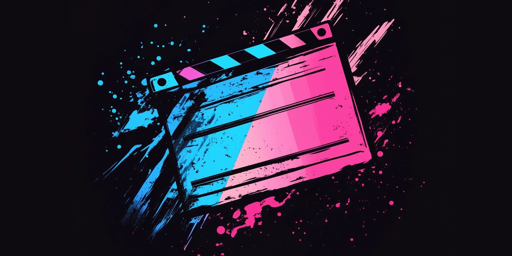
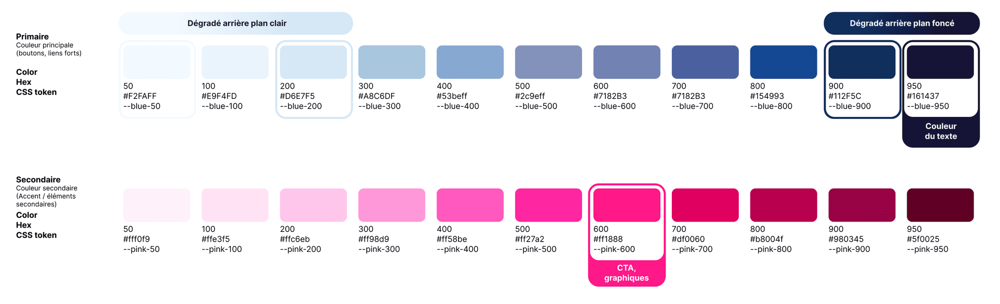
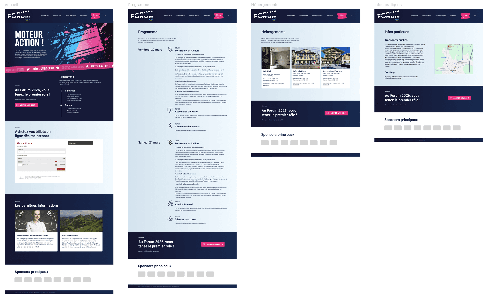

Un projet sous le signe du cinéma et du dynamisme
Contacté fin décembre 2024, j’ai été mandaté pour concevoir et mettre en ligne le site du Forum 2026 organisé par la Jeune Chambre Internationale de la Veveyse, un événement national placé sous le thème “Moteur Action !”
Le lancement prévu début mars 2025, à peine deux mois plus tard, le délai était un challenge de taille. Cette contrainte a nécessité une organisation rigoureuse et une collaboration fluide.
Design UI Traduire une thématique en un visuel fort
La Junior Chamber International (JCI) est une organisation à but non lucratif, indépendante sur le plan politique et religieux. Agés de 18 à 40 ans, ses membres représentent des cadres dirigeants créatifs, courageux et ouverts, prêts à développer de nouvelles compétences de par leur engagement actif au sein de JCI.
Active dans plus de 100 pays et sur les 5 continents, elle comprend 6'000 chambres locales et plus de 200'000 membres.
J’ai été mandaté pour créer le site du JCIS Forum 2026, un événement d'échange organisé par la Jeune Chambre Internationale de la Veveyse.
Les seuls éléments de départ étaient le logo du Forum 2026 et le thème "Moteur Action !". À partir de celui-ci, j’ai développé un univers graphique complet, inspiré du monde du cinéma.
Ayant le champ libre pour laisser parler ma créativité, j’ai opté pour une combinaison de teintes audacieuses qui crée un style moderne et dynamique pour représenter la jeunesse de cette organisation.

Je conçois des sites web modernes et efficaces pour les associations, événements et PME.
Vous organisez un événement ou représentez une association à Châtel-St-Denis ou en Veveyse ?
Discutons de votre projet!
Contactez-moiPalette de couleurs
Pour refléter la jeunesse et le dynamisme liés à cet événement, j’ai opté pour une combinaison de teintes qui crée un style moderne et audacieux.
- Le bleu foncé sert de toile de fond, évoquant un sentiment de confiance et de professionnalisme.
- Le rose vif est utilisé comme couleur d'accent pour les appels à l'action, les titres ou des éléments graphiques clés. Cette teinte permet d'apporter du dynamisme et de la créativité au design.
- Pour une ambiance plus douce dans les parties de contenu, j’ai opté pour un arrière plan bleu clair. Cette couleur de fond combinée au bleu foncé des textes offre un contraste élevé pour une lisibilité optimale.
Les couleurs vives et contrastées offrent ainsi un dynamisme efficace, et les tons plus neutres comme le blanc ou le bleu clair pour l'essentiel du contenu permettent de préserver la lisibilité pour les contenus et le professionnalisme.

Cette palette sert de base au design system du site, garantissant cohérence, flexibilité et identité visuelle forte sur toutes les pages.
Objectifs
Une approche pensée pour les associations et événements.
Ce projet illustre parfaitement ma manière d’aborder la création de sites web pour les associations, les événements et les PME locales :
- Design UI et développement du thème sur mesure, aligné sur l’identité du projet
- Structure claire et intuitive, adaptée à la communication événementielle
- Autonomie, grâce à la mise en place d'un système de gestion de contenu Wordpress
Chaque site que je conçois est une vitrine vivante, capable de refléter l’esprit de son événement tout en restant fonctionnelle et durable dans le temps.

Design et développement web efficace pour un événement national
Voir le site